Submitted Auto-JEPA and JEPA-UQ to ICLR 2027
Co-authored two papers on action-oriented latent world models and uncertainty measurement for autonomous-driving rollouts.
Academic Curriculum Vitae | Last updated: October 26, 2026
Research on applying world models to autonomous driving, embodied intelligence, and industrial production, with a focus on prediction, planning, and decision-making in dynamic environments.
Co-authored two papers on action-oriented latent world models and uncertainty measurement for autonomous-driving rollouts.
Co-authored a double-blind submission on comfort-oriented and stability-enhanced motion planning for autonomous driving.
Received First Prize in the 13th Beijing Undergraduate Mechanical Innovation Design Competition.
Contributed papers, codebases, and research resources to the Awesome Autonomous Driving World Model repository.
Co-authored research on a vision-language-model-enhanced RL agent for heavy-duty vehicle eco-driving.
Studied rule-based energy management for diesel-hydrogen hybrid vehicles and renewable-energy utilization.
Led the approved “Eye of Demeter” project, combining world-model methods with intelligent monitoring and energy-efficient chicken-farm technology for rural revitalization.
Started undergraduate research with Academician Li Jun's Research Group at Tsinghua University.
Served as Vice President of the University Employment & Entrepreneurship Association, President of the Model United Nations Association, and delegation head for BIMUN, NIMUN, and UIBE MUN.
Completed introductory research training through literature review and technical investigation.
Led the team to First Prize in the Beijing Energy/Water Conservation and Low-Carbon Emission Reduction Social Practice and Technology Competition, First Prize in the Higher Education Cup National Undergraduate Mathematical Contest in Modeling, and received the “Best Crisis Response” Award at BIMUN.
Served as hardware and debugging lead for the competition project.
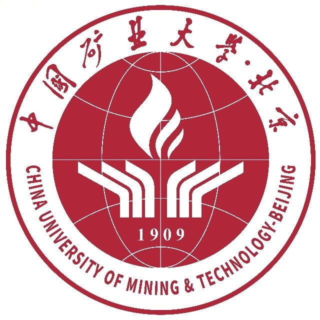
B.Eng. in Intelligent Manufacturing Engineering
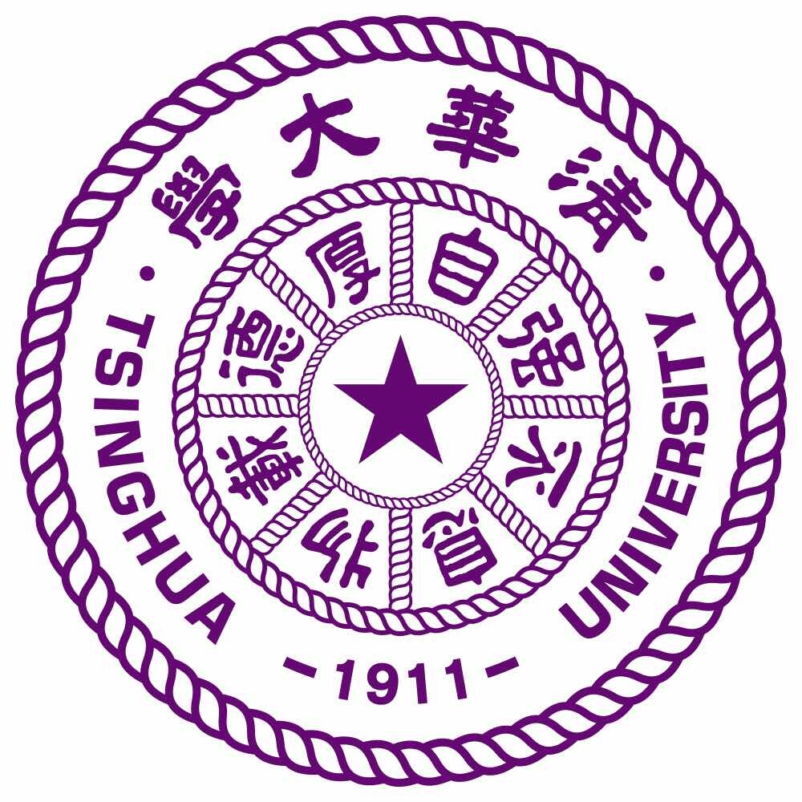
Jointly Supervised Undergraduate Researcher, Academician Li Jun's Research Group
Host advisor: Prof. Huang Chaosheng Home advisor: Prof. Zhang Yunjiu
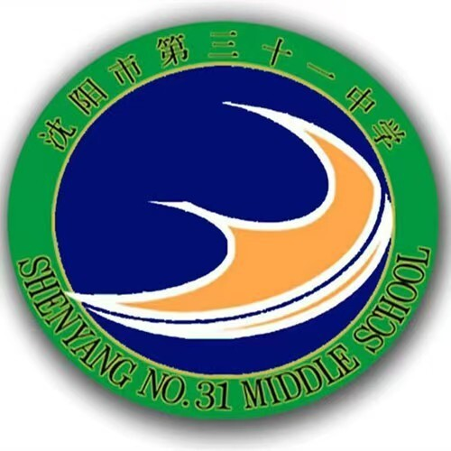
Robotics Club Member
Built a competition-ready robotics project, sparking an early interest in research; pandemic restrictions prevented national-submission participation.
Research affiliation
Research affiliation
Academician Li Jun's Research Group, School of Vehicle and Mobility, Tsinghua University
Role: Jointly Supervised Undergraduate Researcher
“Eye of Demeter - Technology Empowering Rural Revitalization: An Energy-Efficient Chicken Farm Leading a New Chapter in Green Agriculture” (Advisor: Prof. Zhang Yankui)
Advisor: Prof. Li Yan Role: bio-inspired suction-cup design
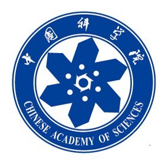
Research internship
Affiliated with the School of Vehicle and Mobility, Tsinghua University
Role: Hardware and Debugging Lead
Role: Team Leader (Overall Coordination)
Role: Team Member
Role: Team Member
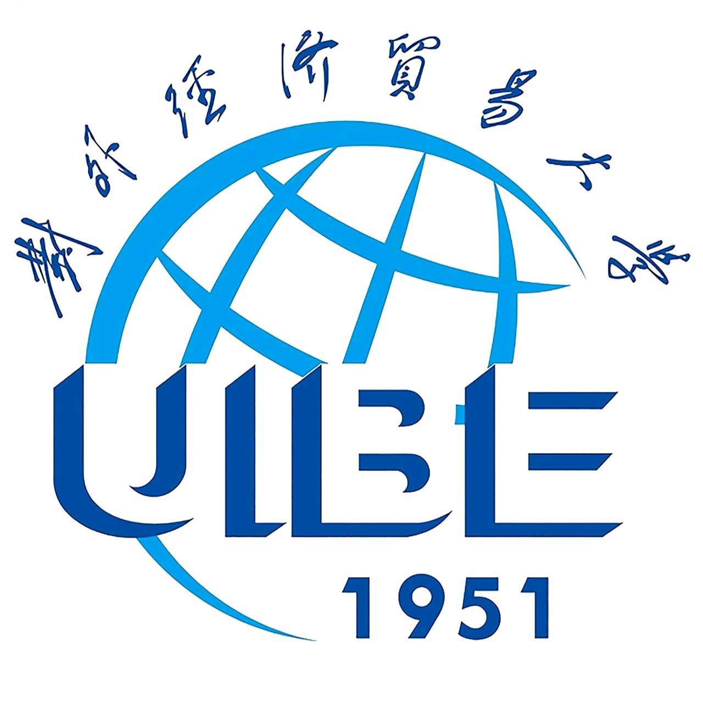
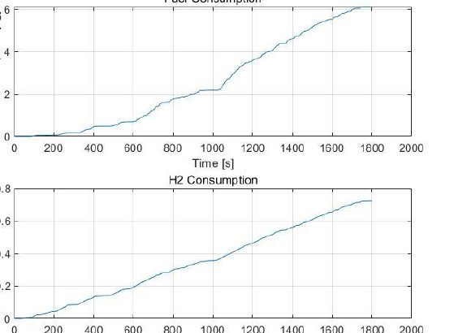
Fuel and hydrogen consumption2025 · REM2025
Co-author · Published conference paper View paper
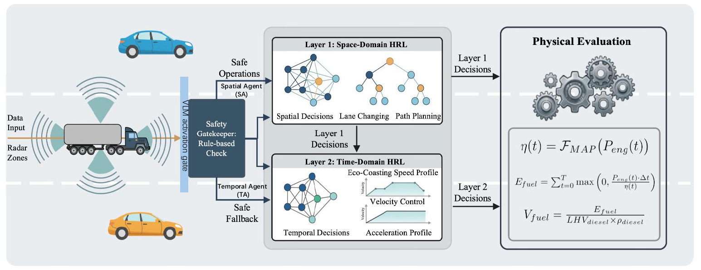
SDRA system architectureUnder review · AAAI 2027
Co-author · Under review
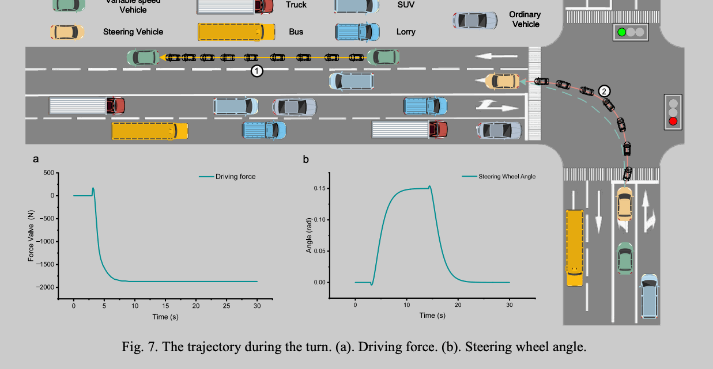
3D-VIPM turning trajectoryUnder review · ICRA 2027
Co-author · Under review
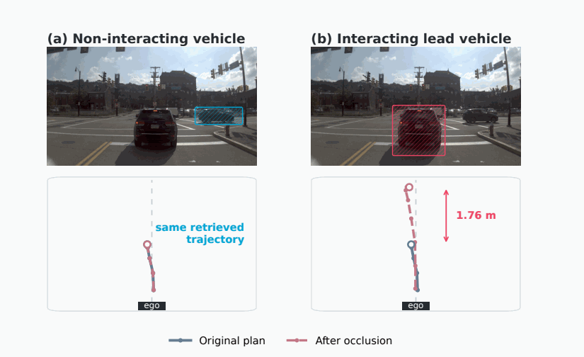
Auto-JEPA intent responseUnder review · ICLR 2027
References foundational JEPA work co-authored by Yann LeCun, including Self-Supervised Learning from Images with a Joint-Embedding Predictive Architecture (CVPR 2023) and V-JEPA 2 (2025).
Co-author · Under review
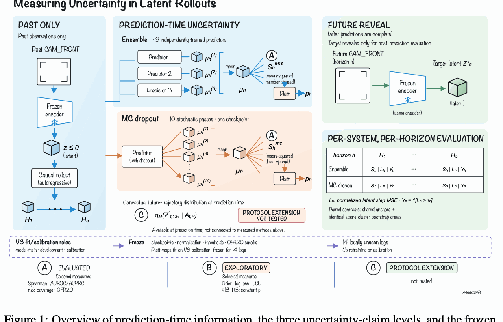
JEPA-UQ rollout protocolUnder review · ICLR 2027
Co-author · Under review
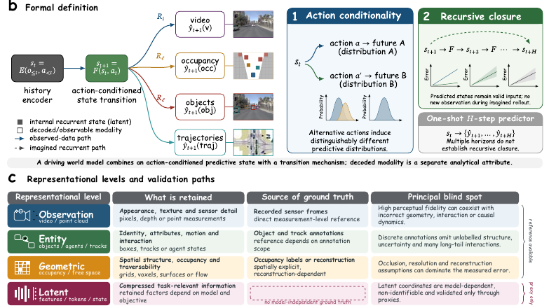
Review frameworkReview manuscript · In preparation
Reviews representation, rollout mechanisms, system roles, and evaluation of autonomous-driving world models.
Co-author · In preparation
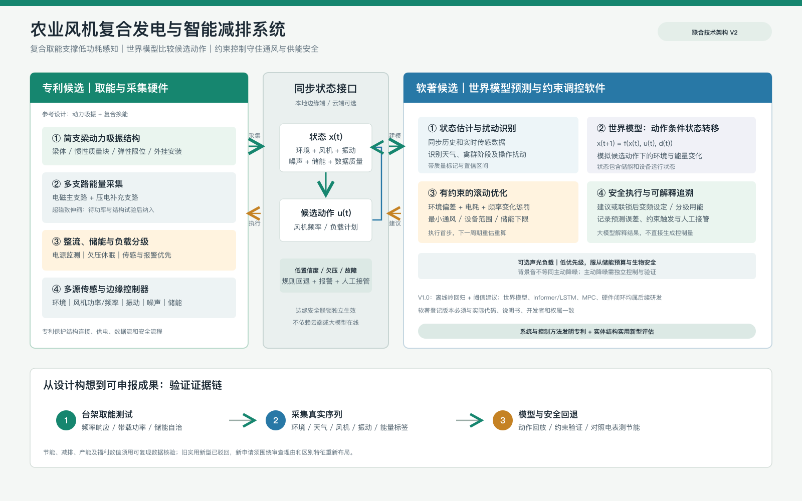
Patent conceptPatent concept · In development
Developing a concept combining vibration energy harvesting, environmental sensing, and world-model-informed ventilation planning. The patent application has not been submitted.
Project Leader · CUMTB Undergraduate Research and Innovation Project
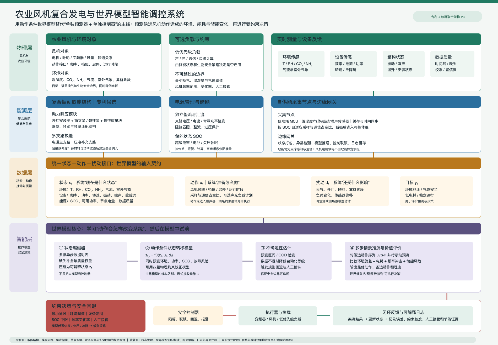
Proposed future architectureSoftware copyright · In preparation
V1.0 supports offline CSV analysis, standardized ridge-regression forecasts, and threshold-based recommendations. The illustrated world-model architecture is a proposed future extension, not an implemented V1.0 feature.
Software copyright application in preparation
Curated papers, codebases, and research resources on autonomous-driving world models for a structured, accessible literature map.
Supplementary self-study selected to strengthen the mathematical and algorithmic foundations of my research in world models, autonomous driving, and embodied intelligence.
Working through the core lectures and assignments, with model-based reinforcement learning as a foundation for world models.
Course materialsFocused on conditional expectation, martingales, and Markov chains for stochastic modeling and trajectory forecasting.
MITx course pageStudied Chapters 4-5 and 9-11, emphasizing optimization foundations for MPC and motion-planning layers.
Open course textRead Yang Song's score-based modeling materials and Lilian Weng's diffusion-model survey, alongside DDPM, Score-SDE, and Flow Matching.